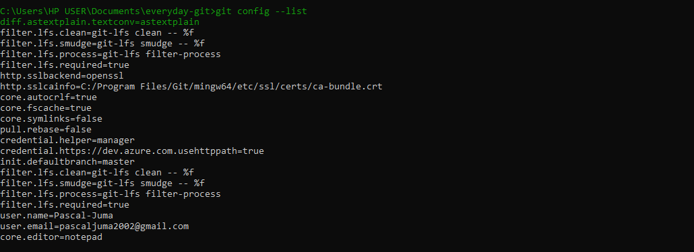
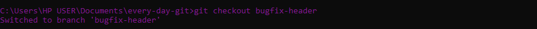

Master Git step by step with this practical guide.
Introduction
Git is the most widely used version control system, helping developers track changes, collaborate efficiently, and manage project versions. Whether you're working solo or with a team, Git ensures you never lose progress and can always revert to previous states.
This guide covers Git fundamentals, from installation to branch management and deployment, giving you the skills to manage your code effectively.
1. What is Git?
Git is a distributed version control system (VCS) that helps developers track changes in their code, collaborate efficiently, and manage different versions of a project.
What is a Version Control System?
A version control system (VCS) is a tool that records changes to files over time, allowing developers to revert to previous versions, compare modifications, and collaborate without conflicts.
There are different types of version control systems, including:
Git - A distributed VCS known for its speed and flexibility.
Apache Subversion (SVN) - A centralized VCS.
Mercurial - Similar to Git but with a different workflow.
Perforce - Used in enterprise settings for large-scale projects.
While there are many version control systems, this guide focuses on Git and its integration with GitHub, a platform for hosting and sharing Git repositories.
2. Installing Git
To check if Git is installed, run the following command in your terminal:
git --version
Figure 1.1: Git is installed successfully in the Local machineFigure 1.2: Git is not installed in your Local machine

Figure 2.2 Your Git Username and Email is successfully set or configuredFigure 2.3 Here’s what a failed attempt looks like at checking the Git configuration
To Manually fix .gitconfig if the issues persits:
Open File Explorer and go to:
C:\Users\YourUsername
Find the .gitconfig file.
If it’s missing, create a new one using Notepad(Code Editor of Your Choice) and add the following:
Figure 2.4 Manually editing .gitconfig in Notepad.
Save it as .gitconfig (ensure it is not .gitconfig.txt).
Try running git config --list again.
If the issue is resolved, Git should now display your configuration details correctly (See Figure 2.2).
5. Initializing a Git Repository
A Git repository is a storage location where Git tracks changes to files in a project. It contains all version history and enables collaboration.
To create a new Git repository, follow these steps:
Navigate to your project folder in the terminal:
cd path/to/your/project
Run the following command to initialize Git:
git init
This creates a hidden .git directory, which stores all Git-related data for your project.
Figure 3: Running git init to create a new repository.
Once initialized, you can start tracking files and making commits.
6. Adding Files to the Staging Area
The staging area is where Git tracks changes before committing them. It acts as a middle step, allowing you to review modifications before saving them permanently.
Tracked vs. Untracked Files
- Tracked files: Files that Git is monitoring for changes.
- Untracked files: New or modified files that Git hasn’t added to version control yet.
To check the status of your files, run:
git status
Figure 4.1: Untracked files before adding to the staging area.
Adding Files to the Staging Area
Before adding files, ensure you have at least one file in your project folder. If not, create one:
echo "Hello Git" > example.txt
Now, add this file to the **staging area**, preparing it for commit:
git add example.txt
To stage all changes in the folder at once, use:
git add .
Figure 4.2: Staging files before committing.
Run git status again to confirm the file is staged:
git status
Figure 4.3: Your file is successfully staged and ready for committing.
7. Committing Changes
A commit is a snapshot of your project at a specific point in time. It records the changes made and allows you to revert if necessary.
Writing a Good Commit Message
Commit messages should be clear and descriptive. Follow this format:
After adding files to the staging area, commit them with a message:
git commit -m "Initial commit"
Figure 5.1: Committing changes with a message.
Viewing Past Commits
To see all previous commits, use:
git log
Figure 5.2: Viewing the commit history using git log.
Reverting to a Previous Commit
To return to an earlier commit, find the commit ID from git log and run:
git checkout COMMIT_ID
For example:
git checkout b7f9c10
Figure 5.3: Reverting to a previous commit using git checkout
Now, your repository is in the state of that particular commit.
8. Branches in Git
A Git branch is an independent line of development, allowing changes to be made without affecting the main codebase.
Why Are Branches Important?
Branches enable:
Parallel Development: Teams can work on different features simultaneously.
Safe Experimentation: Test changes without disrupting stable code.
Efficient Collaboration: Merge completed work seamlessly.
Bug Fixes: Address issues while continuing feature development.
By default, projects start on the main branch, but new branches can be created, modified, and merged as needed. This ensures a clean, organized workflow.
9. Creating a Branch
In Git, a branch allows you to develop features or fix bugs without affecting the main codebase. Creating a branch helps keep your workflow organized and prevents conflicts in collaborative projects.
Creating a New Branch
To create a new branch, use:
git branch new-feature
Figure 6.1: Creating a new branch called new-feature.
Once the branch is created, you can switch to it and start working on new changes.
10. Viewing All Branches
To see all branches in a Git repository and identify the active branch, use:
git branch
Figure 7.1: Viewing all branches in the repository. The active branch is marked with an asterisk (*).
For a more detailed view, including remote branches, use:
git branch -a
Figure 7.2: Listing all local and remote branches.
The branch with the * symbol is the currently active branch.
11. Switching Active Branches
To work on a different branch, you need to switch to it. The recommended command is:
git switch feature-login
Figure 8.1: Switching to the feature-login branch.
Alternatively, older Git versions use:
git checkout feature-login

Figure 9.2: Using git checkout to switch branches (legacy method).
After switching, confirm the active branch by running:
git branch
Figure 9.3: The active branch is marked with an asterisk (*).
Now you are working on the new branch without affecting the main branch.
12. Merging a Branch
Merging integrates changes from one branch into another, typically bringing feature updates into the main branch.
Steps to Merge a Branch
1️⃣ First, switch to the branch you want to merge into (usually main):
git switch main
2️⃣ Merge the feature branch (e.g., new-feature) into main:
git merge new-feature
Figure 10.1: Merging the new-feature branch into main.
Handling Merge Conflicts
If Git detects conflicting changes, it will prompt you to manually resolve them. Open the affected files, resolve the conflicts, and then commit the merge:
Figure 10.2: Verifying the merge using git log --oneline --graph.
Once merged, you can safely delete the merged branch to keep your repository clean:
git branch -d new-feature
13. Deleting a Branch
Once a branch is merged or no longer needed, you can delete it to keep your repository clean.
Deleting a Local Branch
To delete a local branch that has already been merged, use:
git branch -d new-feature
Figure 11.1: Successfully deleted the new-feature branch.
If the branch hasn’t been merged yet, Git will prevent deletion. To force delete it, use:
git branch -D new-feature
Deleting a Remote Branch
To remove a branch from the remote repository (e.g., GitHub), use:
git push origin --delete new-feature
Figure 11.2: Shows successful deletion of the new-feature branch from the remote repository..
After deletion, verify by listing all branches:
git branch -a
14. Next Steps
Now that you have mastered the basics of Git, here are some recommended next steps to deepen your knowledge:
üîπ Collaborate with GitHub
Learn how to push your projects to GitHub, create pull requests, and collaborate with teams.
üîπ Explore Advanced Git Concepts
Git Rebase: Streamline commit history and maintain a cleaner project structure.
Cherry-picking: Apply specific commits from one branch to another.
Git Stash: Save unfinished work without committing.
üîπ Automate with Git Hooks
Use Git hooks to automate tasks before or after commits, such as running tests or formatting code.
üîπ Learn Git Workflows
Understand popular Git workflows like Git Flow and Trunk-based Development to improve team collaboration.
Keep experimenting and refining your Git skills to become a more efficient developer.
15. Congratulations üéâ
Great job! You’ve successfully learned the fundamentals of Git. By now, you should be able to:
Install and configure Git for version control
Track changes using commits
Work with branches to manage development efficiently
Merge and delete branches to keep your repository organized
Deploy your projects online using Git
But this is just the beginning! Git is a powerful tool, and there’s always more to learn. Keep practicing, collaborate with others, and refine your skills.
üöÄ Stay Connected!
Join our developer community, stay updated with new Git techniques, and continue improving: